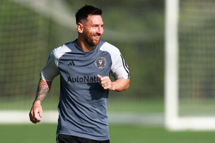

Lionel Messi es un futbolista argentino, nacido en Rosario, Santa Fe. Está considerado uno de los mejores deportistas del mundo. Actualmente juega para el club Inter Miami. En 2022, Messi lideró a Argentina hacia la victoria en la Copa del Mundo de la FIFA en Qatar. Su destreza en la cancha y su estatus como uno de los mejores jugadores de todos los tiempos lo han llevado a ser comparado con Maradona.
Conocido como Leo o Pulga, su inmensa calidad ya apuntaba cuando tenía cinco años y jugaba en el club de barrio de su ciudad natal dirigido por su padre, un empleado de la industria metalúrgica, y se reafirmó cuando, a partir de sus siete años, comenzó a jugar en las divisiones inferiores del Newell's Old Boys de Rosario. A los 10 años, a punto de dar el salto al club River Plate de Buenos Aires, se le detectó un retraso en el desarrollo óseo causado por un bajo nivel de hormonas del crecimiento; el tratamiento médico era muy costoso, los clubes no quisieron afrontarlo y su padre, que no disponía de los recursos económicos necesarios, decidió entonces emigrar a Barcelona con su familia, donde se le había presentado una posibilidad laboral. En septiembre de 2000, Leo Messi realizaba una prueba en el F.C. Barcelona; el técnico Carles Rexach quedó maravillado con su talento futbolístico y, firmando en efecto un contrato en una servilleta de papel, como cuenta la anécdota, lo incorporó al club, que se hizo cargo del tratamiento del chico. Messi tenía entonces trece años y medía 1,40.

Con la victoria de España en el Mundial de 2010, algunos de los compañeros de Messi en el F.C. Barcelona habían logrado incluir en sus vitrinas todos los trofeos posibles; para el argentino, ésta seguía siendo una asignatura pendiente. A pesar de su contribución, y excluyendo la medalla de oro en los Juegos Olímpicos de Pekín de 2008, los resultados con la selección argentina fueron mediocres. En el Mundial de Alemania (2006) no pasó de los cuartos del final.